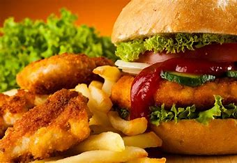
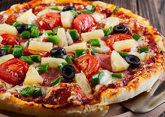

ABOUT US
At the point when ‘sea view’ organizer Tony ventured off the shorelines of Oahu following a multi-day of
surfing with his Navy pals in the mid-60s, he did what worked out easily for him. He went hunting down a delicious burger, a hot container of fries,
and a virus drink.
After twenty years, in 1982, it was that feeling of peace and fulfillment he was attempting to reproduce when he took a little piece of the ‘sea view’s
and thudded it down right in the territory of Southern California.
Today, ‘sie view’s still is consistent with Tony’s
unique experience and his unique vision. Also, however, our menu has developed to incorporate plates of mixed greens, soups, and delicate tacos.
We realize numerous individuals love Indian sustenance, yet a large number of them loathe or are unconscious of the regularly unfortunate fixings that make run-of-the-mill Indian nourishment taste so great. Our menu highlights things that utilize the sound and fragrant flavors, however, forget the stuffing ghee, spread, oil, and overwhelming cream. ‘sea view’ has developed to incorporate four superb takeout areas in Toronto, with additional to come sooner rather than later. Our group takes pride in the way that we can furnish our new and faithful clients with extraordinary tasting Indian-roused nourishment that is not normal for that some other Indian eateries you visit. We perceive that a few people are as yet searching for run-of-the-mill Indian nourishment, and that is fine with us. Our disclaimer is that on the off chance that you’re anticipating overwhelming, slick, undesirable Indian nourishment, ‘sea view’ isn’t the place for you.
our homemade mystery Caesar dressing. Other housetop choices are our Grilled or Chilled Shrimp, new walleye conveyed every day from Red Lake Nation in Minnesota and house-ground steak burgers.
